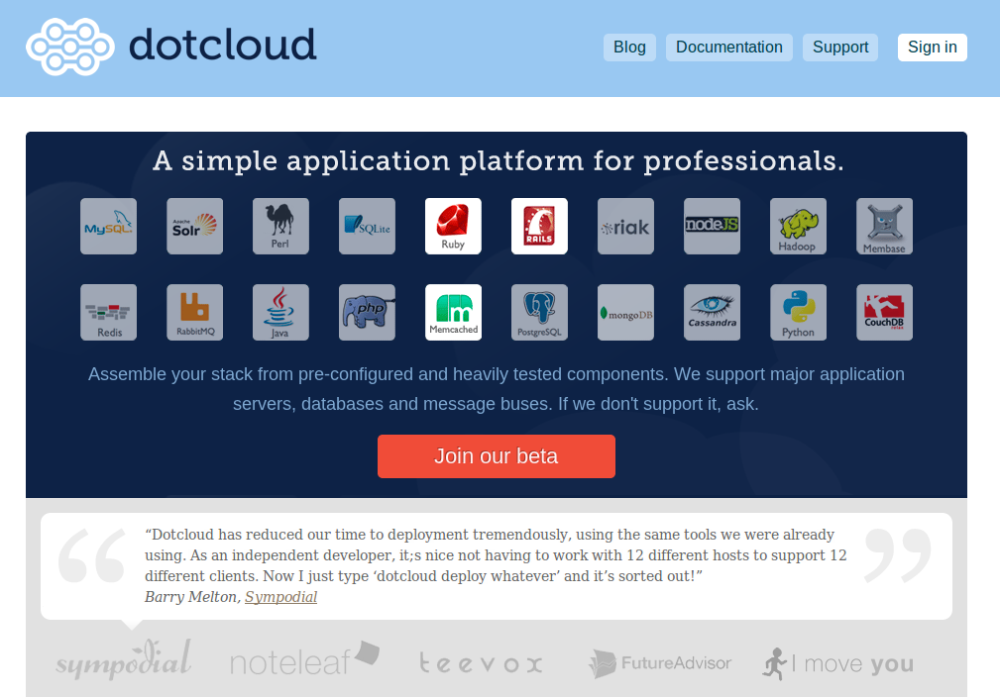

The quick brown fox jumps over the lazy dog.
| o | toggle overview |
|---|---|
| j | next page |
| k | prev page |
| left key | prev group |
| right key | next group |
| up key | prev page in the same group |
| down key | next page in the same group |
| 0 | first page |
| $ | final page |
YAMAMOTO Ryuzo
@dragon3

"Be a developer, not a sysadmin."
みなさん、やってますよね？
# python $ sudo easy_install dotcloud
$ dotcloud -h
# サブコマンドヘルプ $ dotcloud deploy -h
namespace を作成
namespace の中には複数の service (アプリケーション) が登録できる
$ dotcloud create dragon3
[ アプリケーションのURL ]
http://[service].[namespace].dotcloud.com/
namespace のリストと
その namespace にぶら下がっている service のリストを表示
$ dotcloud list dragon3: - dragon3.www (perl) - dragon3.nopaste (perl) - dragon3.mojo1 (perl)
新しいサービスを登録 (配備環境作成)
$ dotcloud deploy -t perl dragon3.hello
アプリケーションの配備(アップロード)
$ dotcloud push dragon3.hello ~/ws/hello/
最初に作ったhelloアプリケーションを配備します。
. ├── Makefile.PL ├── app.psgi └── hello.pl
dotcloud に配備できるのは PSGI仕様に準拠したアプリ
Mojolicious であれば、、、
$ emacs app.psgi
require 'hello.pl';
サーバ側に依存ライブラリを準備するために Makefile.PL を作成
$ emacs Makefile.PL
use ExtUtils::MakeMaker;
WriteMakefile( PREREQ_PM => { 'Mojolicious' => '1.42' } );
アプリケーションURLにアクセスしてみる
http://hello.dragon3.dotcloud.com/
$ dotcloud push dragon3.book .
アプリケーションURLにアクセスしてみる
http://hello.dragon3.dotcloud.com/
アクセスログやエラーログを表示(tail -f)
$ dotcloud logs dragon3.book1
サーバにSSH
$ dotcloud ssh dragon3.book1
ヘルプで見てね
$ dotcloud -h
ノープラン です。
時間の限り、なにかいろいろやってみませんか？
と思いましたが、もう呑もう！
This presentation was created with "prez."
- html based rich slide template.
Developer: @Takazudo